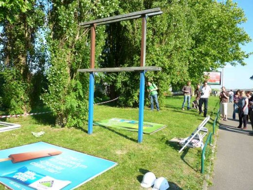

| |
Site dédié à la publication d'informations communiquées par le Collectif des déboulonneurs. En aucun cas ce site n'appelle à des actions illégales. | |
 |
||
|
Accueil du site > Lille > Déboulonneurs de Lille : premier démontage de panneau publicitaire (...)
Résumé de l’actionDate : Mercredi 29 Juin 2011 Heure approximative de l’action elle-même : de 18h à 18h45 Lieu précis de l’action : Lille, avenue de Dunkerque, au niveau du pont qui enjambe la Deule, coté Bois-Blanc (entre les stations de métro Bois-blanc et Port de Lille) Nombre de panneaux touchés : 1 Propriétaire des panneaux touchés : Vandesompele Inscriptions portées sur les panneaux : Aucune. Les cadres des deux faces furent d’abord démontés et posés délicatement sur le sol. Puis ce fut le tour des deux supports publicitaires proprement dit, laissant les pylônes de fixation à nu. Nombre d’activistes : 15 Nombre approximatif de sympathisants : Une dizaine Nombre approximatif de passants-spectateurs : Quelques piétons et de nombreux automobilistes Nombre approximatif de journalistes présents : 1 journaliste de Nord Eclair. Nombre approximatif de policiers : 2 policiers en moto. Attitude de la police : Ils se sont garés de l’autre côté de l’avenue et nous ont observés sans intervenir. Retombées médias :
Toutes les photos : A venir Compte-rendu détailléToujours de manière non-violente, assumée et en public, le groupe des barbouilleur-ses se sont donc attaqués à un panneau de 12m² pour dénoncer l’omniprésence de la publicité dans l’espace public et les dangers environnementaux, sanitaires et sociaux qu’elle représente. Le groupe s’est déplacé à l’entrée de l’avenue de Dunkerque, puis s’est arrêté juste après le pont où l’attendait un double panneau fixe de 2x3m par face de la société Vandesompele. Il était accompagné du journaliste de Nord Eclair auquel Aless et Alain ont expliqué le but de l’action. Sont arrivés ensuite d’autres membres du groupe ainsi qu’une famille de 4 enfants arrivée en spectateur. Vers 18 h 15 nous étions environ 25 en comptant les 8 spectateurs présents. Méthodiquement une bande rouge et blanche de délimitation du périmètre de sécurité fut déployée, puis la banderole du Collectif des Déboulonneurs tendu au regard des automobilistes. Grâce à l’échelle amenée sur place, les cadres des deux faces furent d’abord démontés et posés délicatement sur le sol. Puis ce fut le tour des deux supports publicitaires proprement dit, laissant les pylônes de fixation à nu. Lorsque les deux supports publicitaires furent déposés, Aless prit le haut-parleur et fit un petit discours d’enterrement symbolique de la publicité. Les supports furent recouverts d’un drap noir sur lequel a été déposée une couronne mortuaire et une petite plaque commémorative sur laquelle étaient inscrits les mots « Ci gît la publicité ». 
C’est alors que, vers 18 h 45, deux policiers en moto sont arrivés mais, curieusement, ne nous ont pas interpellés. Ils se sont garés en quinconce de l’autre côté de l’avenue et nous ont observés sans intervenir. Aless entonna avec toute l’équipe le chant mortuaire « Publicité, nous t’avons déboulonnée ». Comme dans certains enterrements régionaux, la « cérémonie » se termina par le partage du verre de l’amitié. Mais dans le cas présent, nos mines furent réjouies lorsque le groupe se dirigea au café « au Turenne » situé en deçà du pont, côté Lille. Le Collectif a entendu une fois de plus par son action créer un débat public (de façon plus démonstrative que précédemment) sur la notion de liberté de non-réception, avec pour objectif la réduction partout en France (villes et campagnes) du format et de la densité de l’affichage publicitaire. Complément : Jeudi à 13h, la sépulture n’avait pas encore été profanée. Mieux encore, une main anonyme a jeté quelques boutons d’or sur le drap pour s’associer à notre joie. Les jardiniers qui sont venus tondre la pelouse ce matin ont même respecté le sanctuaire. Ils n’ont pas osé outrepasser notre balisage rouge et blanc et ont méthodiquement contourné le feu panneau. Communiqué de Presse39ème action de désobéissance civile des Déboulonneurs lillois, contre l’invasion publicitaire des villes et des campagnes Premier démontage de panneau publicitaire par les déboulonneurs lillois En fin d’après-midi, les déboulonneurs lillois sont de nouveau entrés en désobéissance civile. Pour la première fois, ils ont démonté un panneau publicitaire, au début de l’Avenue de Dunkerque. Devant environ 25 personnes, les 2 faces du panneau déboulonné ont été couchées au sol puis recouvertes d’un drap noir et d’une couronne de fleurs. Il est maintenant hors d’état de nuire. Dans le Nord, des municipalités courageuses ont décidé de réglementer l’affichage publicitaire afin d’améliorer le cadre de vie de chacun. Par exemple, le panneau démonté aujourd’hui était situé dans une zone de publicité restreinte (ZPR1), qui prévoit une seule publicité de chaque côté de la rue, par tronçon de 200m. Dans le tronçon en question, on compte 7 dispositifs. Malheureusement, les afficheurs voyous (en France, 1 panneau sur 3 est illégal) n’hésitent pas à attaquer les Règlements Locaux de Publicité (RLP) qui ont été adoptés et appliqués (voir par exemple) afin de gagner du temps. Et le temps d’affichage d’une publicité, c’est beaucoup d’argent. Parce que l’omniprésence de la publicité est un danger immédiat, parce que les afficheurs essaieront par tous les moyens de nous imposer toujours plus de publicité, de simples citoyens sont rentrés en désobéissance civile. De façon symbolique, non-violente et assumée, ils ont nettoyé l’espace public. Inlassablement, les déboulonneurs continueront de dénoncer l’invasion publicitaire, jusqu’à gain de cause, c’est-à-dire la réduction significative de la taille et de la densité des affiches publicitaires. |
|
Site utilisant SPIP - Hébergement Ouvaton
|